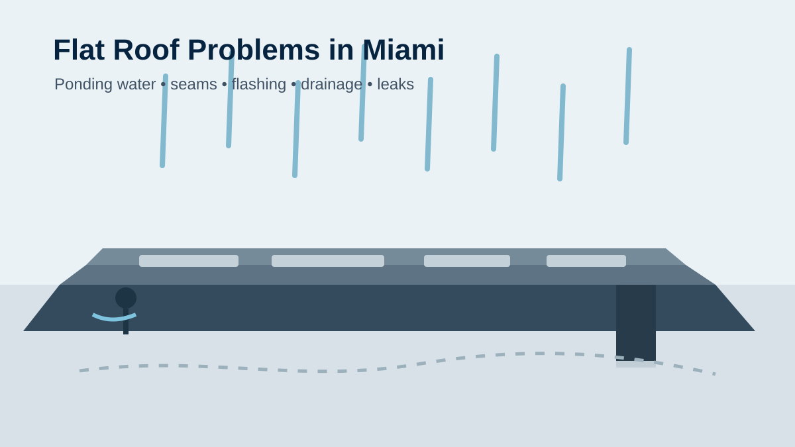

9 Common Flat Roof Problems in Miami and When to Repair Them
Flat and low-slope roofs can develop problems that are easy to overlook until water reaches the building interior. In Miami, heavy rain, heat, humidity, wind and debris can make drainage, flashing and roof-surface maintenance especially important.
This guide explains common warning signs without assuming that every roof needs replacement. The right next step depends on the roof system, age, condition, drainage and the extent of the damage.
1. Ponding water
Water that remains on a low-slope roof after normal drainage has had time to work can point to blocked drains, inadequate drainage, surface deformation or other system problems. Repeated ponding deserves investigation because persistent moisture can accelerate deterioration.
2. Damaged or open seams
Membrane seams are critical parts of many low-slope roofing systems. Separation, lifting or visible openings can allow water beneath the roofing surface. A qualified inspection can determine whether a localized repair is appropriate or whether the damage is more widespread.
3. Blisters and bubbles
Raised areas or blisters can occur when moisture or air becomes trapped within roofing layers. Do not puncture them yourself. The cause and extent should be assessed before deciding on a repair.
4. Failed flashing
Flashing helps protect transitions, edges, walls and penetrations. Loose, cracked or deteriorated flashing can become a leak path even when the main roof surface looks intact.
5. Clogged drains and scuppers
Leaves and debris can restrict drainage points. When water cannot leave the roof efficiently, ponding becomes more likely. Keeping drainage paths clear and checking them after severe weather can help identify problems early.
6. Problems around roof penetrations
HVAC equipment, vents, pipes and other penetrations create areas where seals and flashing must remain watertight. Cracked sealants, damaged boots or deteriorated flashing around a penetration can cause localized leaks.
7. Punctures and surface damage
Foot traffic, dropped tools, debris or maintenance activity can damage some roof surfaces. Small punctures may be repairable, but they should not be ignored simply because the interior is still dry.
8. Soft or deteriorated areas
Soft spots can indicate deterioration beneath the visible roof surface. A professional assessment may include checking the roof assembly and surrounding areas to determine whether there is hidden moisture or structural damage.
9. An aging roof system
Every roofing system has a finite service life. Frequent repairs, recurring leaks, widespread deterioration or a system approaching the end of its expected life can make replacement more practical than repeated patching. Age alone, however, is not enough to diagnose a roof without considering its actual condition.
Repair or replacement: which makes sense?
A localized defect with an otherwise serviceable roof may be a repair candidate. Replacement becomes more relevant when problems are widespread, the roof assembly is significantly deteriorated, leaks keep returning, or the existing system can no longer provide dependable performance.
For a broader decision framework, see How Do I Know If I Need a New Roof? and Miami roof replacement.
When should you call for an inspection?
- You see active water entering the building.
- Water repeatedly ponds after rain.
- You notice open seams, damaged flashing or punctures.
- There are unexplained ceiling stains or damp areas.
- A storm may have damaged the roof.
- Repairs are becoming frequent or increasingly extensive.
If water is entering during a storm, protect people and interior belongings first. Avoid walking on a wet roof or attempting repairs in unsafe weather conditions.
What a professional flat-roof inspection should look at
An inspection should consider the visible roof surface, seams, flashing, drainage points, penetrations and areas associated with reported leaks. Depending on the roof and suspected problem, the inspection may also need to investigate whether moisture or deterioration is present below the surface.
For local permit and code information, consult Miami-Dade roofing requirements and the official Miami-Dade roofing resources linked there.
Frequently asked questions
Are flat roof leaks always a sign that the whole roof needs replacement?
No. A leak can come from a localized defect, flashing, a penetration or a drainage issue. The extent of the problem should be determined before choosing repair or replacement.
How can I tell if ponding water is a serious problem?
Recurring or persistent ponding is worth investigating, especially when it is accompanied by membrane deterioration, staining, soft areas or repeated leaks.
Can I repair a flat roof myself?
Minor maintenance tasks such as removing accessible debris may be reasonable when safe, but roof repairs can involve specialized materials and fall hazards. Active leaks and suspected membrane or flashing failures are better assessed by a qualified roofing professional.
Need help with a Miami roof problem?
If you are dealing with a leak or visible flat-roof damage, a professional inspection can help identify the source and clarify whether repair or replacement is appropriate.
Request a Roof Assessment →Sources and further reading
- Miami-Dade County — Roofing Permits
- Miami-Dade County — Product Control
- Miami-Dade County — Prepare Your Home
Related Miami roofing guides
Roof repair · Roof inspection · Emergency roof repair · Commercial roofing · More roofing advice